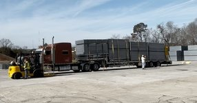

Starting at $3 per linear foot. Fast delivery, professional installation, and flexible rental terms for construction sites and events across Green Bay, Appleton, and the Fox Valley.
Whether you're a general contractor securing a job site or an event coordinator managing crowds, we have the temporary fence panels, chain link fencing, and barricades you need — delivered and set up the same day or next day.
Secure your Green Bay construction site with 6-foot chain link temporary fence panels. We handle delivery, installation, and pickup when the job is done. Our temporary construction fencing in Green Bay meets OSHA and local code requirements.
From Green Bay Packers watch parties to county fairs, festivals, and outdoor concerts — our temporary event fencing keeps crowds organized and your event safe. Barricades and chain link panels available.
Standard 6'×12' galvanized chain link panels with weighted bases. No ground penetration required. Easy to reposition as your site changes. Available by the panel or by the linear foot for any project size in the Fox Valley area.
Add privacy screens to your temporary fence rental for dust control, visual barriers, or wind protection. Ideal for renovation projects, demolition sites, and events requiring a defined perimeter. Attach to any chain link panel rental.
Every construction site needs controlled access. We supply drive-through gates and pedestrian gates with your temporary fence rental in Green Bay. Single or double gate options with padlock hardware included.
Our temporary fence rental service area covers Green Bay, Appleton, De Pere, Ashwaubenon, Manitowoc, Sheboygan, and Door County. See our full Wisconsin fence rental service area for delivery coverage.
We make renting temporary fencing in Green Bay as simple as one phone call.
Tell us your site location, linear footage needed, and how long you need it. We give you a straight price — no hidden fees.
Our crew delivers the temporary fence panels and installs them around your perimeter. Same-day and next-day delivery available across Green Bay.
When your construction project or event wraps up, call us and we handle full removal. You focus on your job, we handle the fence.
Monthly rentals for construction sites, short-term rentals for events. Extend your rental anytime. We work around your project timeline.
From individual homeowners to large general contractors, our temporary fence rental in Green Bay serves a wide range of customers.
We're built for GCs with multiple active job sites across the Fox Valley. One call covers all your sites. We track your rental inventory and adjust as your projects move. Learn more about our construction site fencing.
Outdoor concerts, beer gardens, county fairs, 5K races, and corporate events. Our temporary event fencing in Green Bay shows up on time and comes down fast so you can reset for the next event.
Renovating a commercial property or building new? Temporary construction fencing keeps the public out, reduces liability, and satisfies city permit requirements. Available throughout the Green Bay metro area.
Common questions about renting temporary fencing in Green Bay and the Fox Valley.
We deliver temporary fencing to construction sites and events across a wide area of Northeast Wisconsin. Our truck and trailer cover:
Not sure if we cover your location? Call 920-858-9957 — if we can reach you, we'll get you fenced.
Tell us about your project and we'll get back to you with pricing. Or call us directly at 920-858-9957.
Same-day delivery available. We serve Green Bay, Appleton, Fox Valley, and Door County.
📞 920-858-9957